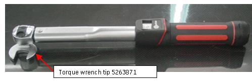

| Manufacturer | MFG model |
| Proto | 4918M Metric Crowfoot Wrench, 18 mm |
| NOTE: | Make sure to mount this torque wrench tip (shipped with system in shipping collector) on 3/8 inch drive torque wrench (prepared by service engineer) with 90 degree: |
Illustration 2: Torque Wrench Tip
